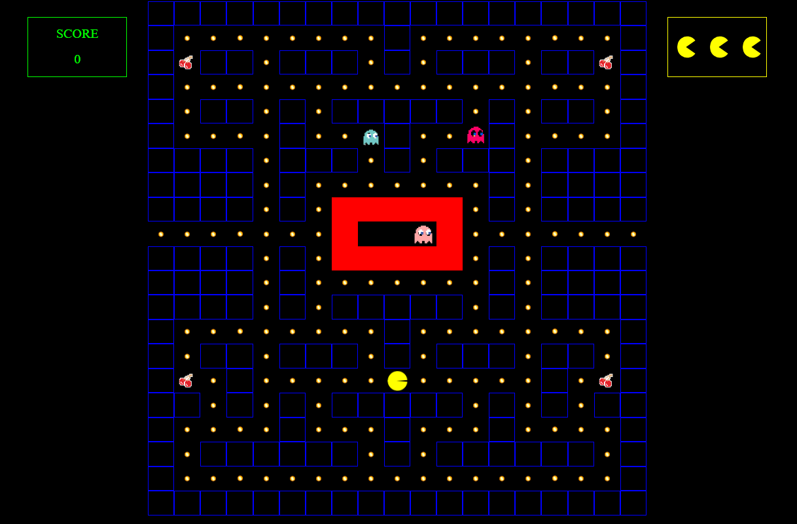
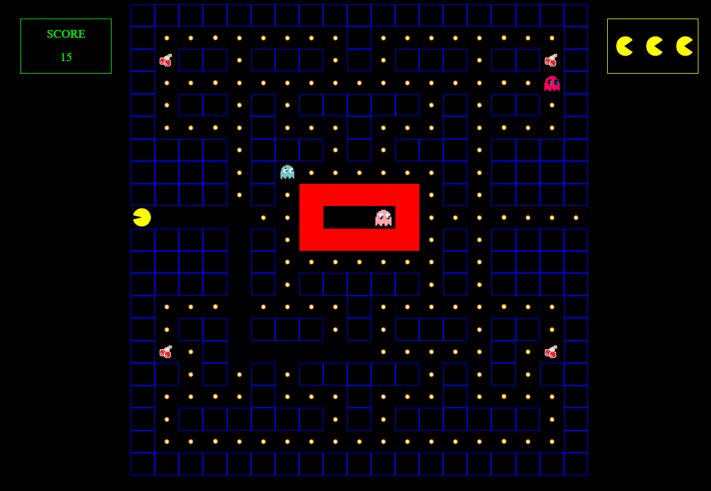
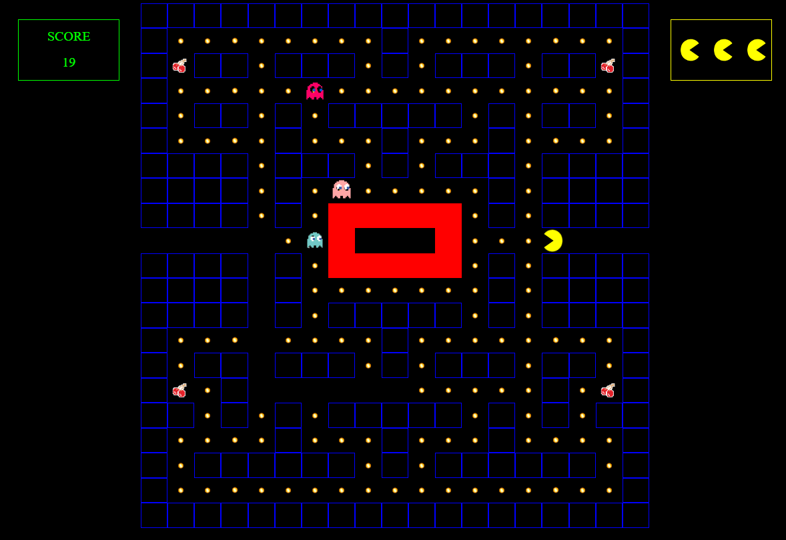
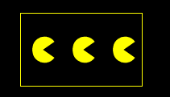
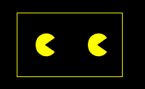
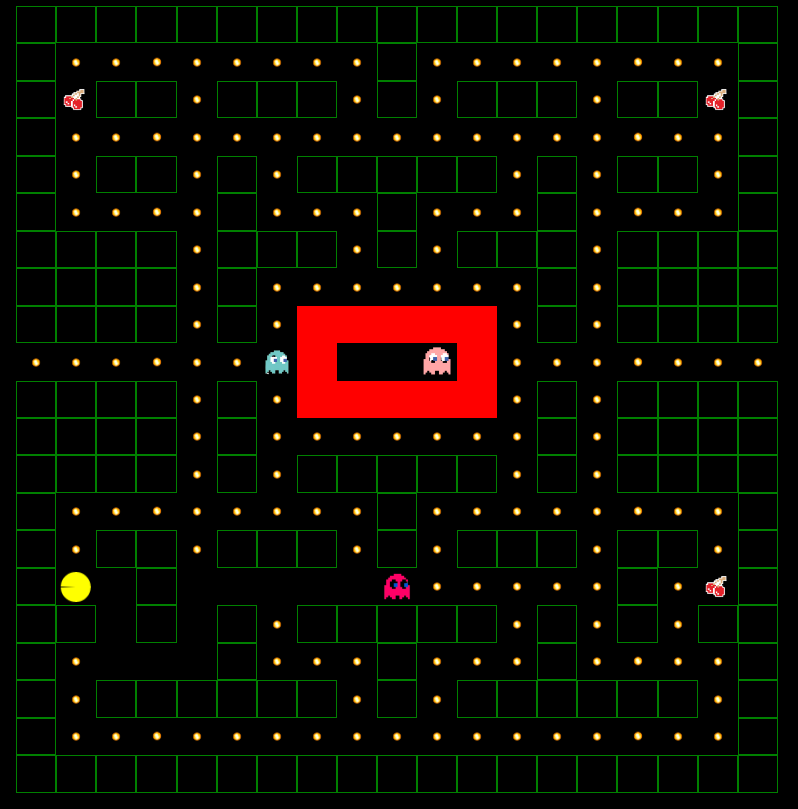
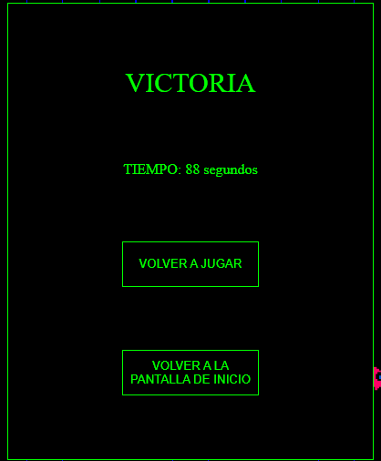

SCOREBOARD
INSTRUCCIONES
USA LAS FLECHAS DEL TECLADO PARA MOVERTE. EL OBJETIVO ES RECOLECTAR TODOS LOS PUNTOS Y LAS CEREZAS SIN MORIR
CUANDO ALCANCES LA ÚLTIMA CASILLA DE UNO DE LOS PASILLOS LATERALES, APARECERÁS EN EL PASILLO CONTRARIO
 TIENES 3 VIDAS, CUANDO UNO DE LOS FANTASMAS TE ALCANCE PERDERÁS UNA VIDA. SI TE QUEDAS SIN VIDAS PERDERÁS LA PARTIDA
 CUANDO PASES POR ENCIMA DE UNA CEREZA TENDRÁS 10 SEGUNDOS EN LOS QUE PODRÁS COMER A LOS FANTASMAS. MIENTRAS ESTO DURE, LOS MUROS APARECERÁN EN VERDE
CUANDO TERMINES APARECERÁ EL TIEMPO TRANSCURRIDO, SI HAS GANADO, SE AÑADIRÁ TU NOMBRE Y EL TIEMPO AL SCOREBOARD
